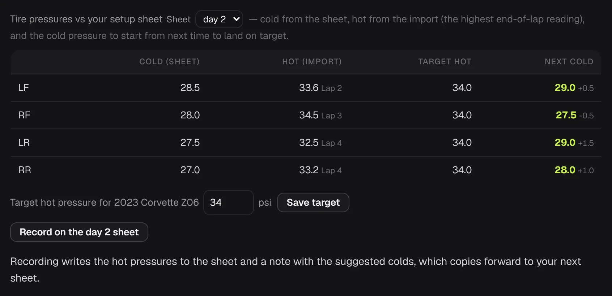

Track-day tire pressures
Tire pressure is the cheapest setup change there is, and the one most first-timers get wrong by leaving it alone. On track the tires get far hotter than they ever do on the road, the air inside them expands, and the pressure you set in the morning is not the pressure you are driving on by lap three. This page covers how to set pressures for a track day, what to measure and when, and how to arrive at a starting pressure you can trust next time.
Cold pressure and hot pressure
There are two pressures to keep straight:
- Cold pressure is what the tire reads before it has been driven — in the morning, in the shade, at the day's air temperature. It is the only pressure you can set ahead of time.
- Hot pressure is what the tire reads straight off the track, at working temperature. It is the pressure the tire is actually cornering on, so it is the one that matters.
Air pressure rises with temperature — as a rule of thumb, about 1 psi for every 10 °F (roughly 0.1 bar for every 8 °C) the air in the tire warms up. A session of hard driving commonly adds several psi over the cold figure, and more on a heavy or powerful car, on a hot day, or on the tires that do the most work at that circuit. Leave road pressures in and the tires can end a session well above where they grip best: the contact patch crowns, the car slides sooner, and the center of the tread overheats.
So the job is to pick a target hot pressure, then find the cold pressure that gets each tire there.
Finding a target hot pressure
The number on the door jamb is for the road: full load, cold tires, comfort and fuel economy. It is not a track target. Better sources, in order:
- The tire maker. Many publish a recommended hot pressure range for track use of a given tire, or will tell you if you ask. Start here.
- People running your tire on your car. Owners' forums, the marque club and the instructors at your event usually know a range that works.
- The tire itself. Once you are in a sensible range, the tire tells you the rest (see reading the tires below).
Whatever target you choose, never run below the minimum the tire maker gives. A tire that is too soft overheats its shoulders and sidewalls, and that is how tires fail.
Setting them on the day
- Set all four cold before your first session, with your own gauge. Use the same gauge all day — gauges disagree with each other by more than the changes you will be making.
- Start a little under your hot target, not at it, so the tires come up toward the target as they warm. If you have no history with the car, a few psi under is a reasonable first guess; the first session will correct it.
- Measure as soon as you stop. Pressures fall quickly once the car is parked, and a slow cool-down lap takes some heat out before you ever reach the paddock. Check all four within a minute or two of coming in, in the same order every time.
- Bleed down to the target any tire that is over it. Write down what each tire read before you touched it.
- Check again after the next session. The second session is usually hotter than the first, and the afternoon hotter than the morning. Expect to bleed a little more than once.
- Read them cold the next morning. After a day of bleeding, the cold reading you find is your real starting pressure for that tire, at that track, in that weather. That is the number worth keeping.
The four tires will not end up equal. The outside tires on the circuit's dominant corners work harder and gain more, the driven and steered ends differ, and the side of the car parked in the sun starts warmer. Set each tire to reach the target on its own rather than matching the cold numbers side to side.
Reading the tires
A gauge tells you the pressure; the tire tells you whether the pressure is right.
- Shoulder wear marks. Most performance tires have small arrows or triangles on the shoulder showing how far the tread should roll over. Scuffing well past them onto the sidewall says the tire is too soft (or the car wants more negative camber); a wear line that stops well short of them says it is too hard.
- How the car feels. Over-inflated tires feel nervous and skate; under-inflated ones feel vague and slow to answer the wheel.
- Tread temperatures. A probe pyrometer across the inside, middle and outside of the tread, taken straight off the track, is the fuller answer: a hot middle points to too much pressure, hot edges with a cool middle to too little, and a large inside-to-outside difference to camber rather than pressure.
Change one thing at a time, by a pound or two, and give it a full session before judging it.
Keeping track in Track Evolution
Pressures only become useful when you can find them again in six months. In Track Evolution, each day of an event has a setup sheet with cold and hot pressures for all four corners, in psi or bar. A new sheet starts from your previous day's, so you only change what changed, and the values that differ from the day before are highlighted.
Each car in your garage can also hold a target hot pressure. When you import a recording that carries the car's own tire-pressure readings — a Corvette or Cadillac PDR video, for example — the app lines up the cold pressure you set, the hot pressure the car measured on track and your target, and works out the cold pressure to start from next time: "LF ran 27.0 cold → 31.3 hot; start from 25.5". One button saves the hot pressures to the day's sheet, and on a multi-day event another opens tomorrow's sheet with the suggested cold pressures already filled in.

The setup notebook and the pressure suggestions are part of Track Evolution Pro. The logbook itself — events, sessions, lap times and telemetry import — is free.